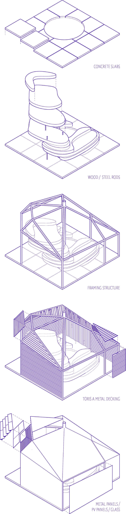
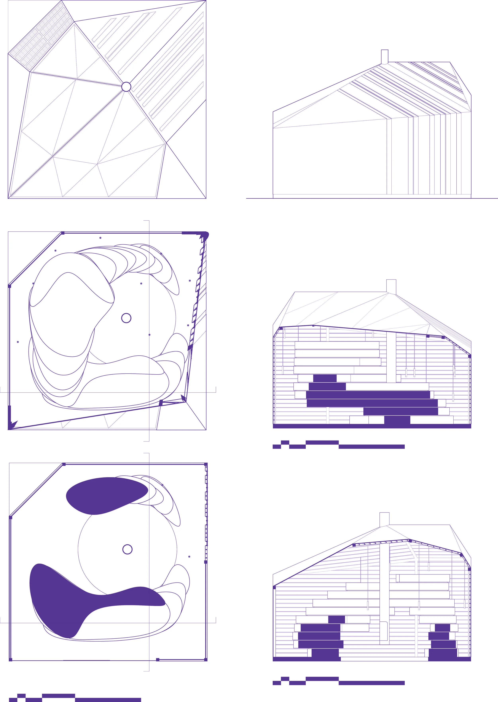
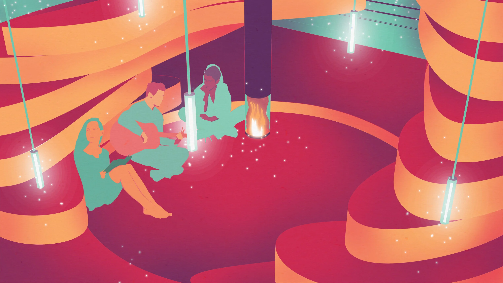
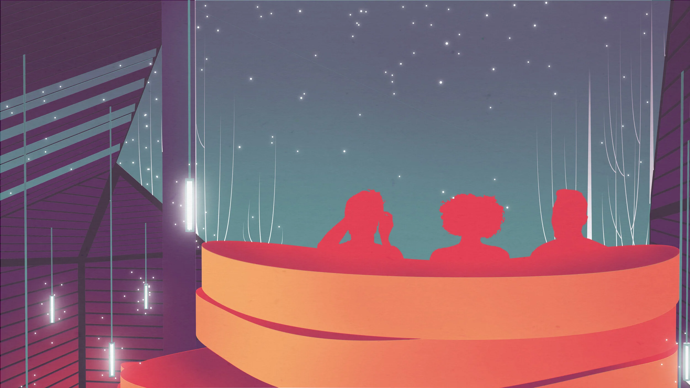

Polaris
The Epic Metals competition is a five day design challenge in a partnership with the company Epic Metals. The challenge was to design a shelter for celestial observations. Our project builds on the balance between the warmth and familiarity of earth and the coldness and mystery of the cosmos.

The earth is represented by an organic mass of tiered wood, a material choice which feels solid and warm. The form wraps around the hearth space, at which the foundation gives away to exposed earth, purposefully at the lowest and warmest point in the building.
The enclosure of Polaris represents the cosmos. It gives a feeling of openness and has a series of huge windows, framing views from the sleeping area, the lounging area, and the hearth.
Where there are not windows, we used Toris A metal deck, as it allowed us to have freedom in the dispersion of lighting. With this, we are able to imitate the fluctuating density of stars in the sky within the small enclosure. These lights hang down into the space and like the sky they represent, they are intrinsically part of the space, while remaining distant.


